Experimental Setup
A velocity network $v_\theta(x,t)$ is trained to move points from a source distribution to a target distribution. The model works only on point coordinates; colours on this page are visualization attributes and never enter training. All distributions are three-dimensional.
with $t=0$ the source and $t=1$ the target. Unless stated otherwise, $x_0$ and $x_1$ are drawn independently (random pairing). Sampling uses forward Euler, $z_{k+1}=z_k+\tfrac1K v_\theta(z_k,k/K)$, so $K$ steps cost exactly $K$ network evaluations (NFE).
| Item | Choice |
|---|---|
| Source | $\mathcal N(0,I_3)$ for Parts 1, 3 and the first Part 2 leg; Part 2 legs 2–4 start from the previous shape |
| Targets | Part 1: BCC unit cell (9 Gaussian blobs). Part 2: 24-grain Voronoi polycrystal, 24-tooth spur gear, a 16 + 12-tooth meshing gear pair, and back to $\mathcal N(0,I_3)$. Part 3: the polycrystal. |
| Part 1 network | MLP $(x,y,z,t)\to\mathbb R^3$, 3 hidden layers × 128, SiLU (34,051 parameters); batch 256, 20,000 steps |
| Part 2/3 network | MLP, 4 × 512, SiLU; inputs $x$, 8 sin/cos frequencies of $t$, 128 fixed random Fourier features of $x$ (930,819 parameters); batch 4096, 40,000 steps |
| Optimizer | Adam, learning rate 10−3 with cosine decay to 10−5; training data drawn with replacement from a fixed pool of 106 target points |
| Quality metrics | histogram total variation (TV) on a fixed 16³ grid over $[-2,2]^3$ plus one overflow cell; sliced Wasserstein-2; shape-specific fractions (points in grain-boundary slabs, outside the cube). Always against independent target samples; the noise floor is two independent target draws. |
| Hardware | NVIDIA RTX 5090 Laptop GPU, Python 3.12.10, torch 2.11.0+cu128. Training, sampling and timings use the GPU. Another process shared the GPU during the runs, so absolute times are indicative. |
Changes from the assignment (approved by the instructor)
(1) Every distribution is 3D instead of 2D. (2) Training runs on a GPU instead of a CPU; CPU timings for sampling are reported for reference. (3) The Part 2 target is a sequence of shapes that follows a metal's life cycle: noise → polycrystal → gear → rotating gear → two meshing gears → rotating pair → noise. Each shape-to-shape transport is a separately trained flow; the rotations are exact rigid-body motions and are labelled as such. All tasks of Parts 1–3 are otherwise answered as specified.
- Part 1 loss
- 3.642irreducible floor 3.614; field error 0.028
- Boundary leakage
- 10.7%of points in grain-boundary slabs (uniform cube: 19.7%)
- One Euler step
- 0.088TV after reflow vs. 0.992 for the baseline
- Path excess
- 0.510 → 0.0001length − chord, baseline → reflow
Part 1: A 3D Flow from Scratch
Task 1Source, target and training pairs
Target. A body-centred cubic unit cell: the eight corners $(\pm1,\pm1,\pm1)$ and the body centre $(0,0,0)$, each chosen with probability 1/9, plus isotropic Gaussian noise of standard deviation $\sigma=0.15$. The coordinates are in arbitrary units with the cube edge equal to 2, so the target has about the same spread as the source (per-axis std 0.95 vs. 1). Source: $x_0\sim\mathcal N(0,I_3)$. Pairs: $x_0$ and $x_1$ independent, $t\sim\mathcal U[0,1]$, $x_t=(1-t)x_0+tx_1$, $u=x_1-x_0$.
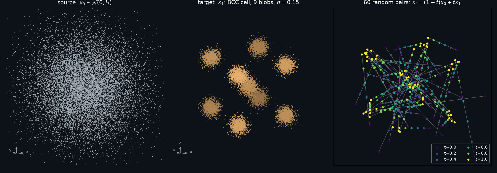
Why the velocity is constant along each training path. For a fixed pair, $x_t$ is linear in $t$, so $\frac{d}{dt}x_t=x_1-x_0$ for every $t$: each path is a straight segment traversed at constant speed. Numerically, finite differences between the six time slices match $x_1-x_0$ to $10^{-7}$ (float32 round-off). Because the pairs are random, the segments cross: many different targets $u$ occur at the same $(x_t,t)$.
Task 2Train the velocity model
The network receives only $(x_t,t)$, never $x_0$ or $x_1$. At a given $(x,t)$ the loss is minimized by the conditional mean of the targets that pass through that point, $v^*(x,t)=\mathbb E[x_1-x_0\mid x_t=x]$, the marginal velocity. The remaining spread of $u$ around $v^*$ cannot be predicted, so the loss does not go to zero. For this Gaussian-mixture target $v^*$ has a closed form. Given the blob $k$, $(x_t,u)$ is jointly Gaussian, which gives
I use $v^*$ only for checking, never for training. Monte Carlo over 400,000 fresh $(x_0,x_1,t)$ gives the decomposition $\mathcal L(\theta)=\mathbb E\|u-v^*\|^2+\mathbb E\|v_\theta-v^*\|^2$:
| Quantity | Value |
|---|---|
| Total variance of $u$, $\mathbb E\|u-\bar u\|^2$ | 5.73 |
| Model loss $\mathbb E\|v_\theta-u\|^2$ | 3.642 |
| Irreducible floor $\mathbb E\|v^*-u\|^2$ | 3.614 |
| Field error $\mathbb E\|v_\theta-v^*\|^2$ | 0.028 |
| Training time (34,051 params, 20k steps, GPU) | 36 s |
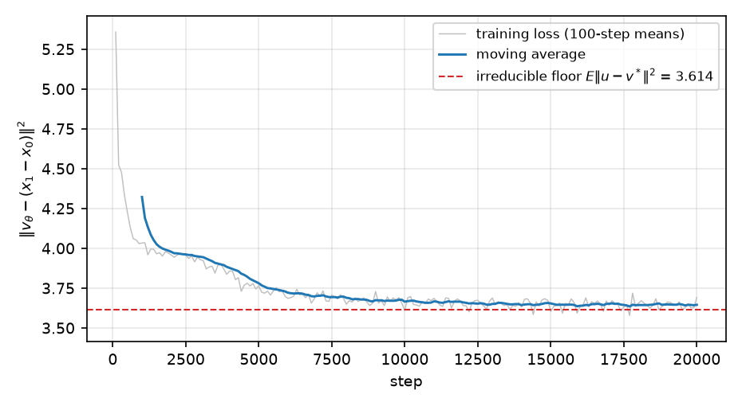
Task 3Generate new points with the learned field
50,000 fresh starts $z_0\sim\mathcal N(0,I_3)$, no endpoints supplied, $K=100$ Euler steps (54 ms on the GPU). Particles are coloured by the azimuth of their starting point so that their motion can be followed.
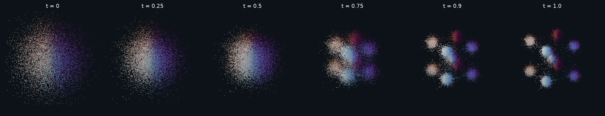
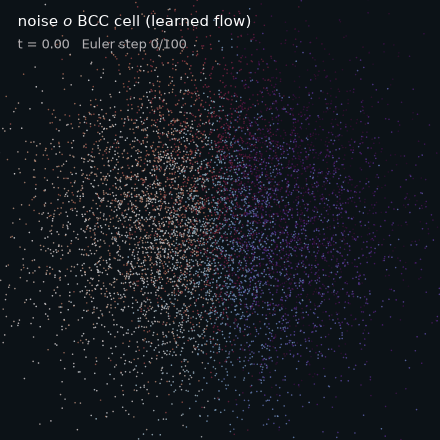
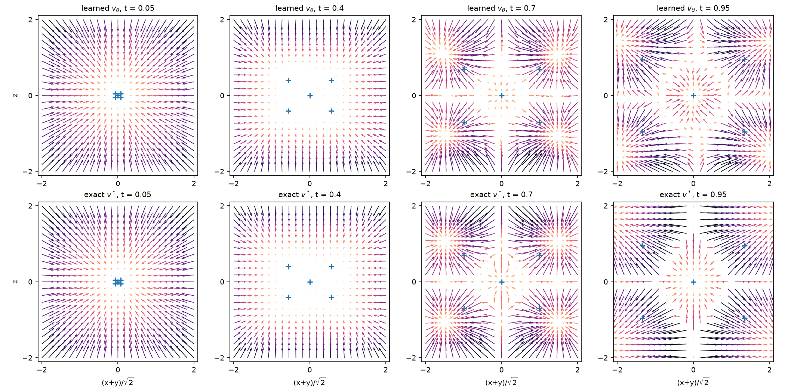
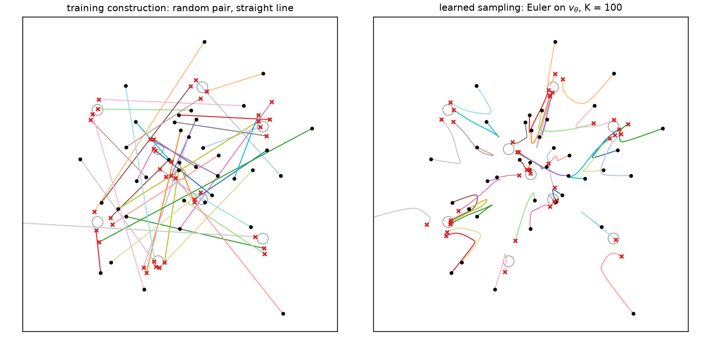
Training paths vs. sampling paths
The training segments are straight by construction (length − chord = 0). The learned trajectories follow the average of all segments through each point. An ODE trajectory cannot cross another one, so particles first move toward the global mean and then turn toward a blob. This gives a mean excess length of 0.52 (median length/chord 1.70) on the same 100-step grid. Straight training paths do not produce straight sampling paths. Part 3 tests whether reflow can change that.
Sample quality (50,000 points)
| Points | TV | SW₂ | blob share |
|---|---|---|---|
| learned field, $K=100$ | 0.078 | 0.0258 | 10.7%–12.1% |
| exact field $v^*$, $K=100$ | 0.047 | 0.0163 | 10.8%–11.5% |
| independent target draw | 0.044 | 0.0119 | 10.9%–11.3% |
All nine blobs are covered (ideal share 11.1%). The exact field integrated with the same Euler grid sits at the sampling noise floor. The remaining gap of the learned model is therefore model error, not discretization error.
Two meshing gears · 150,000 particles after noise → polycrystal → gear → 180° rotation → gear pair, coloured by grain
Part 2: A Metal's Life Cycle as Learned Transport
Task 1Creative targets
All targets are generated procedurally in the notebook. No external images or data are used, so no licence or permission applies.
- Polycrystal. 24 seed points, uniform in the cube $[-1.2,1.2]^3$. Every point of the cube belongs to the grain of its nearest seed (a 3D Voronoi tessellation). A point's distance to the grain boundary is its distance to the bisector plane between the nearest seed $s_1$ and second-nearest seed $s_2$, $\big(\|x-s_2\|^2-\|x-s_1\|^2\big)/(2\|s_2-s_1\|)$. Points closer than 0.04 are rejected. The grains are therefore separated by empty slabs 0.08 wide, which occupy 19.7% of the cube volume, and the microstructure is part of the coordinate distribution itself. Sampling: uniform proposals in the cube, rejection.
- Gear. Spur gear in the $xy$-plane: 24 trapezoidal teeth, module 0.1 (pitch radius 1.2, root 1.075, tip 1.3), thickness 0.5, bore radius 0.28, six lightening holes. Uniform density over the solid (rejection sampling).
- Two meshing gears. Same module, so they can mesh: 16 teeth (pitch radius 0.8) and 12 teeth (pitch radius 0.6), centre distance 1.4, thickness 0.4. The 12-tooth gear is offset by half a tooth so its teeth sit in the other gear's gaps. Uniform density over the union; the 16-tooth gear holds 61.2% of the volume.
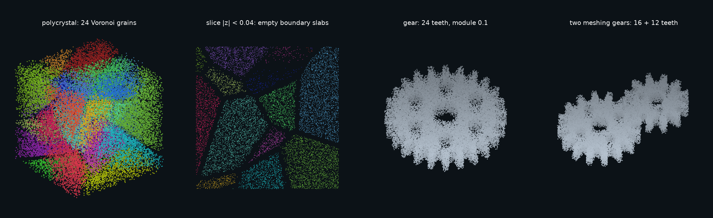
Four learned legs
Every shape-to-shape transport is a separate velocity model trained with the Part 1 loss and independent random pairs between its two endpoint distributions. Flow matching does not require a Gaussian source, so polycrystal → gear is learned in exactly the same way as noise → polycrystal. A capacity pilot (in results_part2/pilot_capacity/) showed that width and depth alone sharpen the cube faces but leave the internal slabs unresolved: a 6 × 512 MLP put 14.0% of its points into slabs that a uniform cube fills at 15.0%. Random Fourier features of $x$ (Tancik et al. 2020) helped most, so all legs use 4 × 512 with 128 features ($B\sim\mathcal N(0,2^2)$).
| Leg | Final loss | Train s |
|---|---|---|
| L1 noise → polycrystal | 3.192 | 92 |
| L2 polycrystal → gear | 1.447 | 93 |
| L3 gear → gear pair | 1.089 | 102 |
| L4 gear pair → noise | 1.942 | 67 |
| L1 with the Part 1 net (3 × 128) | 3.209 | 28 |
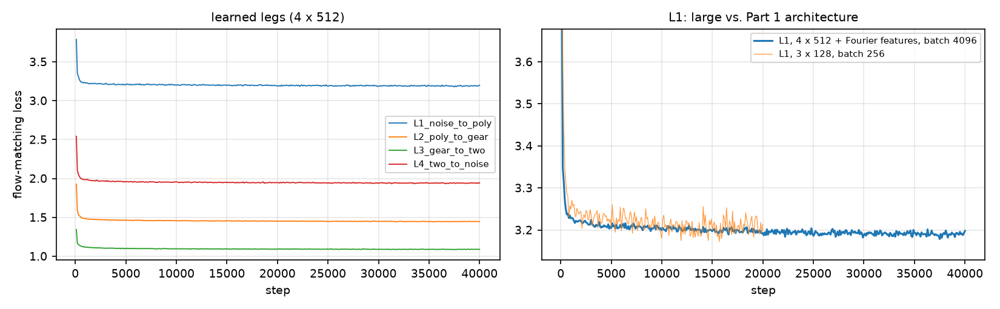
Task 2Animate the learned transport
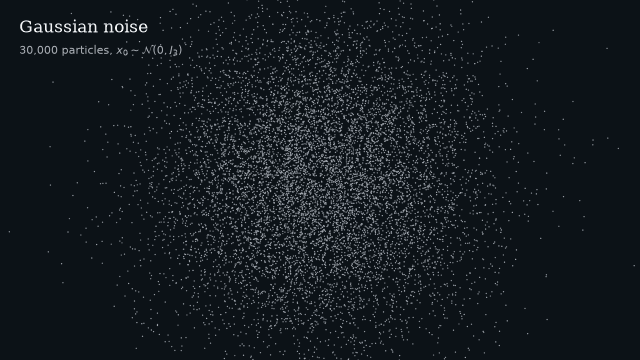
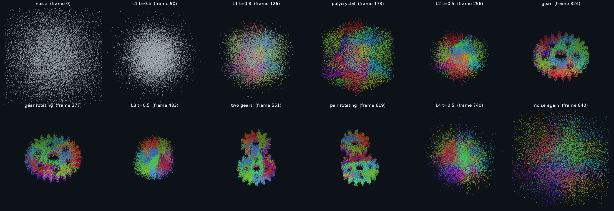
How colours are assigned
After L1, each particle is labelled with the grain whose seed is nearest to its generated endpoint and gets that grain's colour (24 distinct hues). The label is computed after sampling and plays no part in training: every network sees only coordinates and predicts only coordinate velocities. Before the grains form, the particles are grey. The grain colour fades in over $t\in[0.6,1]$ of L1 and then stays attached to the same particle for the rest of the film, so one can follow where each grain's material ends up in the gear, in the gear pair, and back in the noise. The transport is continuous, so each grain stays a coherent patch in the gear. It does not end up in the corresponding place of the gear in any physical sense.
Why these rotation angles
A rotated shape is a valid input for the next learned leg only if its distribution equals that of the unrotated training shape. 180° maps the 24-tooth, 6-hole gear onto itself. For the pair, the 16-tooth gear turns +180° and the 12-tooth gear turns $-180^\circ\times16/12=-240^\circ$ (the meshing ratio), and each angle is a symmetry of its own gear. Particles are assigned to a gear by their distance to its axis relative to its tip radius.
| Check on the tracked particles | Value |
|---|---|
| After L1: in a grain / in a boundary slab / outside the cube | 88.4% / 11.1% / 0.6% |
| After L2: inside the gear solid | 98.0% |
| After the 180° rotation: inside the (unrotated) gear | 98.0% |
| After L3: inside the gear pair | 97.3% |
| After the paired rotation: inside the gear pair | 96.1% |
| Share of particles on the 16-tooth gear (target share) | 64.1% (61.2%) |
| After L4: per-axis std ($x$ / $y$ / $z$); sliced W₂ to $\mathcal N(0,I)$ (noise floor) | 0.97 / 0.94 / 0.88; 0.080 (0.016) |
| After L4: mean distance to the particle's own starting noise | 1.57 |
| Sampling time per leg, 120 steps, 30,000 particles (rendering excluded) | 600 / 429 / 416 / 425 ms |
Errors compound along the chain. Each leg starts from the previous leg's generated points, not from perfect samples. Points that L3 left between the two gears no longer sit on a gear, so the paired rotation moves them with the wrong gear and the inside fraction drops from 97.3% to 96.1%. The final cloud is close to, but measurably narrower than, $\mathcal N(0,I)$ along $z$, the axis along which the flat gears were thinnest. The particles do not return to their own starting noise (mean distance 1.57): L4 is a new transport, not the inverse of L1–L3.
Task 3The sampling trade-off (L1, noise → polycrystal)
The weights are fixed, and so are 50,000 Gaussian starts. The number of Euler steps $K$ is varied (NFE = $K$). Quality is measured against 50,000 independent target samples. The histogram uses one fixed $16^3$ grid (cell 0.25) on $[-2,2]^3$ plus an overflow cell for points outside it, so points that leave the plotted range are counted, not dropped. Grain TV is the TV between per-grain point shares. GPU times are medians of 5 runs, with sampling only (rendering excluded). CPU times are single runs with 4 threads.
| $K$ = NFE | GPU ms | CPU | TV | SW₂ | in slabs | outside | grain TV | TV, 3×128 | slabs, 3×128 |
|---|---|---|---|---|---|---|---|---|---|
| 1 | 6.1 | 0.46 s | 0.992 | 0.6821 | 68.8% | 0.0% | 0.877 | 0.991 | 66.9% |
| 2 | 12.6 | 0.72 s | 0.746 | 0.3537 | 23.1% | 0.0% | 0.568 | 0.768 | 22.5% |
| 5 | 34.6 | 2.19 s | 0.346 | 0.1336 | 19.8% | 0.0% | 0.195 | 0.357 | 21.9% |
| 10 | 64.6 | 3.72 s | 0.173 | 0.0666 | 14.7% | 0.0% | 0.093 | 0.230 | 20.3% |
| 25 | 147.6 | 11.10 s | 0.102 | 0.0277 | 11.7% | 0.1% | 0.037 | 0.177 | 18.8% |
| 50 | 310.7 | 18.59 s | 0.087 | 0.0151 | 11.0% | 0.3% | 0.022 | 0.165 | 18.5% |
| 100 | 606.3 | 34.07 s | 0.084 | 0.0093 | 10.8% | 0.5% | 0.016 | 0.162 | 18.4% |
| 200 | 1234.7 | 79.95 s | 0.082 | 0.0069 | 10.7% | 0.8% | 0.014 | 0.161 | 18.3% |
| target | – | – | 0.077 | 0.0052 | 0.0% | 0.0% | 0.013 | – | – |
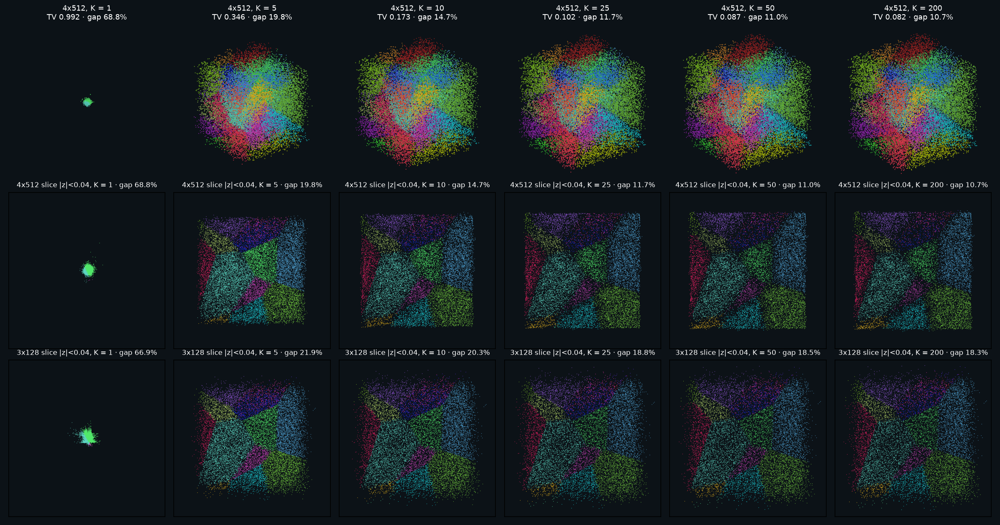
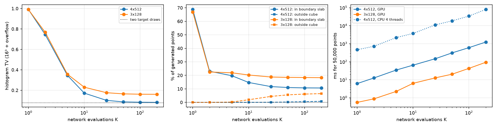
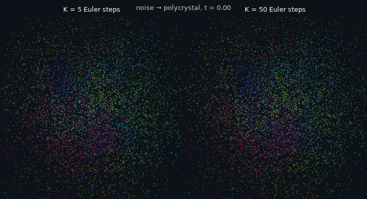
What changes with fewer steps
- $K=1$ collapses the cloud. At $t=0$ the source and target are independent, so the ideal field is $v^*(x,0)=\mathbb E[x_1]-x$ and one Euler step sends every start to the target mean, here the cube centre (TV 0.992).
- Small $K$ shrinks the cloud and blurs the grains. Early velocities point toward the mean, and with large steps the later, outward-correcting velocities are evaluated too rarely. At $K=5$ the cloud is still too compact (no point lands outside the cube) and 19.8% of the points sit in boundary slabs.
- Diminishing returns. TV falls from 0.173 ($K=10$) to 0.102 ($K=25$) and 0.087 ($K=50$), then only to 0.082 at $K=200$, at four times the cost of $K=50$. The noise floor between two independent target draws is 0.077.
Which errors are not caused by the step count
- Model error. The Part 1-size network plateaus at TV 0.161 and 18.3% slab leakage even at $K=200$ (uniform cube: 19.7%). The large network reaches 0.082 and 10.7%. More steps solve the learned ODE more accurately, but they cannot fix the field itself.
- A small trade-off at the faces. The share of points outside the cube grows with $K$ (0.0% at $K=10$, 0.8% at $K=200$). The coarse integrator's contraction hides a slight overshoot of the learned field at the faces.
- Target representation and metric. The TV grid cell (0.25) is three times wider than the boundary slabs (0.08). TV therefore measures how mass is spread over the cube and is nearly blind to the microstructure, and it saturates near its noise floor while 10% of points still sit in boundaries. The slab fraction and grain TV are the shape-aware checks. A finer TV grid would raise its own noise floor at 50,000 samples.
Part 3: Does Reflow Straighten the Paths?
Task 1Hypothesis and the reflow dataset
Hypothesis
One round of reflow on L1 (noise → polycrystal) makes the learned sampling paths straighter and keeps the generated distribution close to the target with far fewer Euler steps than the baseline needs.
The baseline (the Part 2 L1 model, and two more trained from scratch with seeds 1 and 2) is frozen. For each seed, 1,000,000 fresh Gaussian starts are integrated with 200 Euler steps, and each start is stored with its own endpoint, $(z_0, \hat x_1=\Phi^{\text{base}}_{200}(z_0))$. The pairs are never reshuffled, and the target shape is not used to build them. Because the endpoints come from the baseline, they inherit its errors: in all three seeds about 11% of the teacher endpoints already lie in boundary slabs.
Task 2Reflow vs. a compute-matched control
| Arm | Starting weights | Extra training | Pairs |
|---|---|---|---|
| baseline | – | none (40k steps total) | random (noise, target) |
| continued | baseline | +10k steps, lr 2×10−4 cosine | random (noise, target) |
| reflow | baseline | +10k steps, lr 2×10−4 cosine | saved (noise, own baseline endpoint) |
All arms use the same architecture, batch and evaluation: 50,000 held-out Gaussian starts (not used for the pairs), $K\in\{1,\dots,128\}$, metrics against independent target samples. The continued-training arm gets the same extra optimizer steps on the original objective. Any gain that comes merely from 10,000 more updates shows up there too. The teacher gap compares coupled endpoints of the same start, $\mathbb E\|x_K(z)-\Phi^{\text{base}}_{200}(z)\|$, and is not a distance between independent clouds. Straightness is measured for every model on one common 256-step grid: mean over 10,000 particles of path length minus start-to-end distance.
| $K$ | baseline | continued | reflow | teacher gap | ms (reflow) | ||||
|---|---|---|---|---|---|---|---|---|---|
| TV | slabs | TV | slabs | TV | slabs | baseline | reflow | ||
| 1 | 0.992 | 78.2% | 0.992 | 81.4% | 0.088 | 14.0% | 1.158 | 0.016 | 6 |
| 2 | 0.746 | 23.0% | 0.746 | 23.0% | 0.086 | 13.4% | 0.594 | 0.010 | 13 |
| 4 | 0.417 | 21.1% | 0.417 | 21.1% | 0.085 | 13.1% | 0.280 | 0.008 | 25 |
| 8 | 0.212 | 16.2% | 0.211 | 16.1% | 0.085 | 12.9% | 0.138 | 0.008 | 54 |
| 16 | 0.125 | 12.8% | 0.124 | 12.5% | 0.085 | 12.8% | 0.066 | 0.007 | 99 |
| 32 | 0.094 | 11.4% | 0.094 | 11.0% | 0.085 | 12.7% | 0.030 | 0.007 | 199 |
| 64 | 0.085 | 10.9% | 0.085 | 10.5% | 0.085 | 12.7% | 0.012 | 0.007 | 392 |
| 128 | 0.083 | 10.7% | 0.083 | 10.3% | 0.085 | 12.7% | 0.003 | 0.007 | 781 |
Means over the three seeds; independent-target TV floor 0.077. Seed ranges are narrow: at $K=1$ reflow TV spans 0.087–0.089, and at $K=128$ the baseline slab fraction spans 10.6–10.7% and reflow 12.6–12.7%. Times are GPU sampling times for 50,000 points and are the same for all arms at equal $K$.
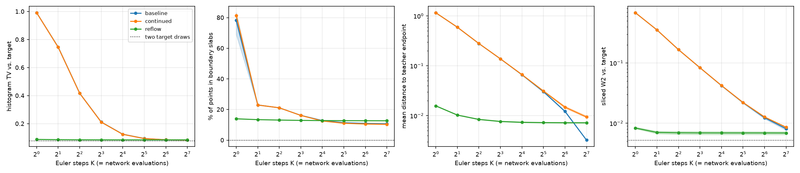
| Straightness (256-step grid) | length − chord | median length/chord | $\|x_1^{K=1}-x_1^{K=256}\|$ |
|---|---|---|---|
| baseline | 0.510 | 2.800 | 1.156 |
| continued | 0.510 | 2.804 | 1.156 |
| reflow | 0.0001 | 1.000 | 0.013 |
| Cost per seed (GPU, mean of 3) | Seconds |
|---|---|
| Baseline training, 40k steps | 84 |
| Pair generation: 1,000,000 starts × 200 NFE | 25 (25–25) |
| Reflow training, 10k steps | 22 |
| Continued training, 10k steps (control) | 22 |
| Extra cost of reflow (pairs + training) | 47 |
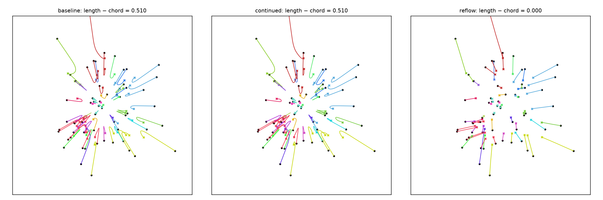
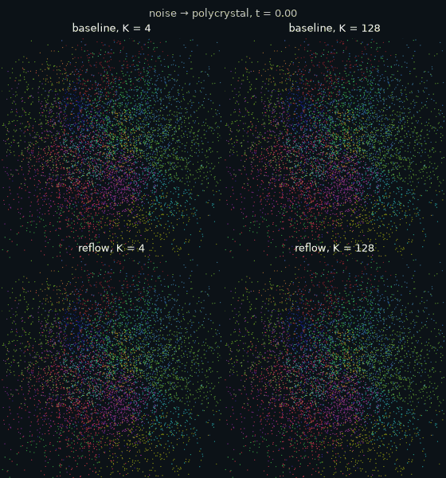
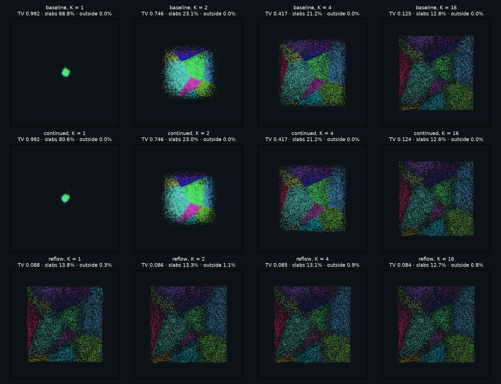
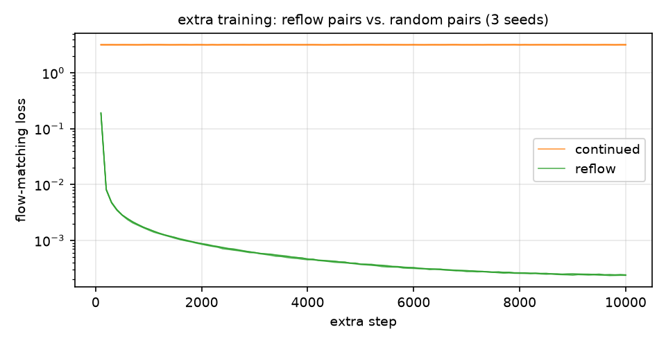
Task 3What the evidence supports
Conclusion
The straightness part of the hypothesis is supported, and so is few-step quality at the level the histogram measures. Excess path length drops from 0.510 to 0.0001. With one network evaluation reflow reaches TV 0.088, against 0.992 for the baseline at $K=1$ and 0.085 at $K=64$. The compute-matched control matches the baseline's TV at every $K$ (and leaks slightly less into the slabs, 10.3% vs. 10.7% at $K=128$), so 10,000 extra updates on random pairs do not explain the gain. The fine microstructure is not fully preserved: reflow leaves 12.7% of points in grain-boundary slabs at any $K$, against 10.7% for the baseline at $K=128$, and its histogram TV plateaus slightly above the baseline's (0.085 vs. 0.083).
Interpretation and alternative explanations
- Why the paths straighten. Random pairs give a target velocity that is ambiguous at every $(x_t,t)$. The fitted field is the average, and its integral curves bend (Part 1). Reflow pairs are a deterministic coupling, the baseline's own ODE map, so the straight interpolations of different pairs rarely cross. The conditional mean then equals the pair velocity, and the integral curves are the straight lines themselves. The near-zero reflow loss confirms this.
- Reflow inherits the baseline's errors. Reflow regresses onto the baseline's endpoints, not onto the target. Its best possible result is the teacher's distribution, which already has ~11% slab leakage. Its teacher gap levels off at 0.007 rather than reaching 0. The extra slab leakage beyond the teacher's (about +2 points) is the price of compressing a whole ODE map into one straight-line field: the map must be fitted to 0.04 precision at grain boundaries, and a small fitting error there moves points into the slabs.
- Straighter is not the same as better. Path straightness says nothing about the target. A model that sent every start straight to the cube centre would be perfectly straight. Quality is therefore judged only against independent target samples, and on the shape-aware metric reflow is slightly worse than its teacher at large $K$.
- Initialization. Reflow and the control both start from the baseline weights. This is a fine-tuning comparison. Reflow trained from scratch would need its own budget and was not run.
- Cost. Reflow's extra cost is about 47 s per model (25 s of pair generation, 200 million NFE, plus 22 s of training). Sampling 50,000 points with reflow at $K=1$ instead of the baseline at $K=64$ saves about 389 ms, so the extra cost is recovered after roughly 120 such batches (6.0 million points).
Scope. One target (the polycrystal), one architecture, one reflow round with a fixed budget, three seeds with small spread. The baselines differ only in their training seed. Their teacher endpoints and all metrics agree closely, so the seed variation is much smaller than the effects reported. The histogram TV cannot resolve the boundaries, so conclusions about the microstructure rest on the slab fraction. Whether a second reflow round or a longer reflow training run would close the slab gap is untested.
Python 3.12.10, torch 2.11.0+cu128, numpy 2.4.6, matplotlib 3.11.1, imageio-ffmpeg 0.8.1, on an NVIDIA RTX 5090 Laptop GPU (Windows 11). Seeds: Part 1 training 0, target pool 0, generation starts 2024; Part 2 target pools 1, legs 0, animation starts 31, sweep starts 4242; Part 3 baselines 0/1/2, pair starts 10000 + seed, extra training 100 + seed, held-out starts 4242; polycrystal seeds 7. Notebooks: part1.ipynb (~1 min), part2.ipynb (~10 min, of which training ~353 s and rendering ~2 min), part3.ipynb (~10 min). Training is skipped when a checkpoint exists in checkpoints/. The code is submitted with the course deliverable and is not published on this site.
- Y. Lipman, R. T. Q. Chen, H. Ben-Hamu, M. Nickel, M. Le. Flow Matching for Generative Modeling. ICLR 2023.
- X. Liu, C. Gong, Q. Liu. Flow Straight and Fast: Learning to Generate and Transfer Data with Rectified Flow. ICLR 2023.
- Y. Lipman, M. Havasi, P. Holderrieth, N. Shaul, M. Le, B. Karrer, R. T. Q. Chen, D. Lopez-Paz, H. Ben-Hamu, I. Gat. Flow Matching Guide and Code. arXiv:2412.06264, 2024.
- M. Tancik, P. P. Srinivasan, B. Mildenhall et al. Fourier Features Let Networks Learn High Frequency Functions in Low Dimensional Domains. NeurIPS 2020.